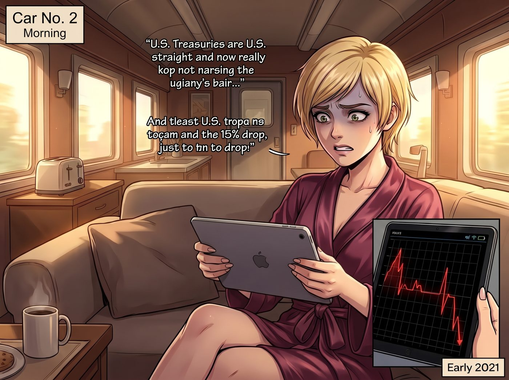
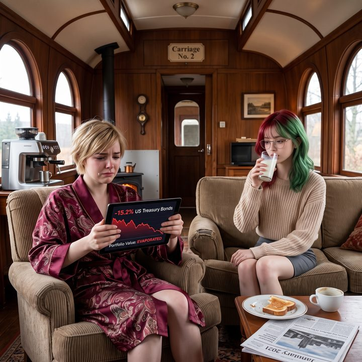

宇宙最複雜的資產


二〇二一年初的某個早晨，二號車廂裡通常瀰漫著咖啡和烤麵包的香氣，但今天，空氣中多了一股濃烈的、屬於資本主義的焦慮。
Victoria 穿著一襲絲綢睡袍，毫無形象地癱在沙發上，雙手死死抓著她的平板。螢幕上是金融行情介面，那條持倉曲線一路向下，像是心電圖停止跳動前最後的抽搐。
「這不可能……這絕對不可能……」Victoria 喃喃自語，精緻的美甲幾乎要摳進螢幕玻璃裡，「這可是美國國債！是這個星球上標榜著無風險的終極避險資產！為什麼我的本金會在幾週之內蒸發了百分之十五？！」
一、最屈辱的決定
正在給猛禽皮卡火星塞除鏽的 Chloe 聞言，幸災樂禍地吹了個口哨：「哇哦，大小姐。妳買了全世界最安全的理財產品，然後虧得連底褲都不剩？這就是你們老錢家族的鈔能力嗎？」
「閉嘴，Chloe！妳這個連支票都不會開的文盲！」Victoria 氣急敗壞地吼道。
但罵完之後，她眼裡的焦慮並沒有減少。她咬著下唇，掙扎了足足五分鐘，終於做出了她這輩子最屈辱的決定。
她深吸一口氣，站起身，像個犯了錯的小學生一樣，慢吞吞地挪到了 Lily 的工作站前。
「Lily……」她的聲音小得像蚊子，完全沒有了平時頤指氣使的名媛氣場，「妳能……幫我看一下我的債券部位嗎？」
Lily 停下了敲擊鍵盤的手，緩緩轉過身，推了推圓框眼鏡。
「Victoria 學姐，您向來把家族信託的流動資金交給華爾街的專業經理人打理。為什麼今天會親自下場？」
Victoria 尷尬地別過頭：「因為……去年疫情剛爆發的時候，股市崩得一塌糊塗，所有人都在喊避險。我想，全世界最安全的東西不就是美國國債嗎？為了向我爸證明我不需要他那些老古董經理人，我就自己動用了畫廊的五百萬美元儲備金，全部買進了長天期國債ETF。反正有美國政府兜底，總不可能虧吧？」
「然後，這幾週疫苗開始大規模施打，國會又通過了新一輪紓困方案，市場開始預期經濟復甦、通膨回升，三十年期國債殖利率在短短一兩個月內，從一點六附近一路升到接近二點五，對嗎？」Lily 平靜地接話。
「對！利率明明在漲，可我的帳戶總資產卻在狂跌！」Victoria 崩潰地抓著頭髮，「這到底是什麼見鬼的邏輯？！」
二、蹺蹺板
Lily 嘆了口氣，端起桌上的熱牛奶喝了一口，像一個大學教授看著一個交白卷的學生。
「Victoria 學姐，您犯了一個非常經典的常識性錯誤。您把國債當成了銀行的定期存款。」
她拿起一支奇異筆，在白板上畫了一個簡單的蹺蹺板。
「在市場上，債券的價格和殖利率是蹺蹺板的兩端，一邊上去，另一邊就下來。新發行的國債利率變高了，您手裡那些鎖定了舊利率的債券就不再有吸引力，價格必須往下掉，才會有人願意接手。而債券的期限越長，這個蹺蹺板就越長，同樣一點點利率變動，另一端的價格就晃得越厲害。您買的偏偏是最長的那一種。」
「可是……可是它是國債啊！它應該很簡單啊！」Victoria 依然無法接受。
「簡單？」Lily 輕輕笑了一聲，眼神變得深邃，「學姐，華爾街有一句老話：股票是給說故事的人玩的，債券是給數學家玩的。美國國債，大概是全宇宙最複雜的資產。它確實不太會違約，但它從來不是沒有風險。」
她的聲音依然軟糯，卻帶著一種令人窒息的壓迫感：
「您以為您買的只是一張政府的借條。但實際上，從您買入長天期國債的那一刻起，這筆錢就開始跟全世界的宏觀變量進行漫長的對賭。聯準會的會議紀要、每個月的通膨數據、就業報告裡零點幾的誤差、疫苗施打的進度、國會又印了多少錢……股票的價格大多取決於一家公司的財報；但長天期國債的殖利率，是全人類對未來幾十年通膨、衰退與增長的焦慮總和。」
她頓了頓，給出了一個殘忍的比喻：
「您一個學藝術史的名媛，憑直覺去押長期利率的方向，就像拿著一把吃牛排的銀叉子，去排雷。」
車廂裡安靜極了。Chloe 已經笑得快要在地上打滾了，Max 則同情地看著臉色慘白的 Victoria。
三、這次不行
「那……那現在怎麼辦？」Victoria 徹底放下了身段，一把抓住 Lily 的手，眼神中充滿了渴望，「Lily，妳一定有辦法的，對吧？妳連能源部的博士都能讓他每個月乖乖來付咖啡錢！我們能不能成立一個什麼抗通膨損失基金，讓哪個聯邦機構把我的虧損補上？或者用妳那個資產量子態重構……」
「不行。」
這一次，Lily 拒絕得異常乾脆。
Victoria 愣住了：「為什麼？這對妳來說不是小菜一碟嗎？」
Lily 輕輕把自己的手從 Victoria 的指尖裡抽出來，推了推眼鏡。
「Victoria 學姐，我能在稅務條款、補助規定、採購流程裡找到空間，是因為那些規則是人訂的，執行的也是人。人會怕麻煩、會怕擔責任、會在模糊的地方讓步。只要是人組成的體系，就有可以周旋的餘地。」
她轉過身，看著螢幕上那條還在跳動的殖利率曲線，語氣裡帶著一絲罕見的敬畏：
「但這個市場不是一個人，也不是一個部門。它是全世界的央行、退休基金、保險公司和交易員，每天用真金白銀一起投票決定出來的價格。沒有一個承辦人可以被說服，沒有一份表格可以被重新歸類，也沒有任何一個機構有義務、更沒有能力替這張桌子上的虧損埋單。連財政部發新債，都得看它的臉色。」
「妳不能對著市場施展黑魔法，學姐。它不會跟妳談條件。」
四、連等都不行
「所以……」Victoria 嚥了一口唾沫，聲音在發抖，「我只能……」
「理論上，買國債的人有兩條路。」Lily 恢復了乖巧的微笑，但內容極度殘酷，「第一，立刻認賠賣出，承擔大約七十五萬美元的實際虧損，當作您學習總體經濟學的學費。第二，如果您買的是一張張真正的三十年期國債，您可以選擇一直抱著，忍受每天看著帳面浮虧的折磨，等到三十年後到期，拿回面額。」
Victoria 剛鬆了一口氣，Lily 又補了一句：
「但是，您買的是ETF。」
「……所以呢？」
「所以它沒有到期日。」Lily 平靜地說，「這種基金會一直賣掉快到期的債、換成新的長天期國債，永遠維持在很長的期限上。它永遠不會到期，也就永遠不會自動把本金還給您。您連等三十年的選項都沒有，只能等利率哪天自己回落，或者認賠。」
Victoria 呆呆地看著她。
她習慣了這個行政女孩用各種不可思議的手段把死局盤活。但今天，Lily 用最冷靜的態度告訴她：這是一堵不可逾越的牆，妳只能一頭撞上去，然後自己把血擦乾淨。
「噗哈哈哈——」Chloe 終於忍不住了，爆發出放肆的笑聲，「大小姐，聽到了嗎？連三十年都等不到！妳這個錢是直接掉進宇宙黑洞了！」
「Chloe，妳給我閉嘴！」Victoria 氣得渾身發抖，眼眶卻紅了。這是她生平第一次在理財上真正吃癟，而且敗得毫無還手之力。
Max 默默地舉起寶麗來相機。鏡頭裡，是不可一世的 Victoria Chase 癱坐在椅子上，對著滿螢幕的虧損欲哭無淚；旁邊的 Lily 安靜地喝著牛奶，彷彿剛剛宣讀了一條不可違抗的物理定律。
「喀嚓。」
五、比我的學費貴
那天深夜，Victoria 一個人坐在車廂外的台階上，裹著羊絨披肩，盯著平板上那個認賠賣出的確認按鈕，遲遲沒有按下去。
身後的門開了。Chloe 走出來，一屁股坐在她旁邊，沒說話，只是把一罐冰啤酒塞進她手裡。
「幹嘛？來看我笑話？」Victoria 沒好氣地說。
「笑話下午已經看完了。」Chloe 自己也開了一罐，喝了一口，「我只是想說，老娘當年為了賺快錢跟 Frank 那種人借錢，最後差點把命都賠進去。每個人都會交一次蠢學費。」
她頓了頓，咧嘴一笑：「只是妳的學費，比我的貴了大概七十四萬九千塊。」
Victoria 愣了一下，然後終於沒忍住，噗嗤一聲笑了出來，笑著笑著又抹了一下眼角。
她看了那個確認按鈕很久，最後按了下去。然後她打開那罐啤酒，跟 Chloe 的碰了一下。
「這件事，」她說，「不准告訴我爸。」
「成交。」
隔天早上，Max 在那張照片背面寫下：
『規則第六十八條：行政黑魔法可以跟官僚周旋，但不能跟市場講價。撞上那堵牆的時候，唯一的解藥是承認自己交了學費。P.S. Victoria 昨晚喝了一罐 Chloe 的廉價啤酒，而且沒有抱怨牌子。』